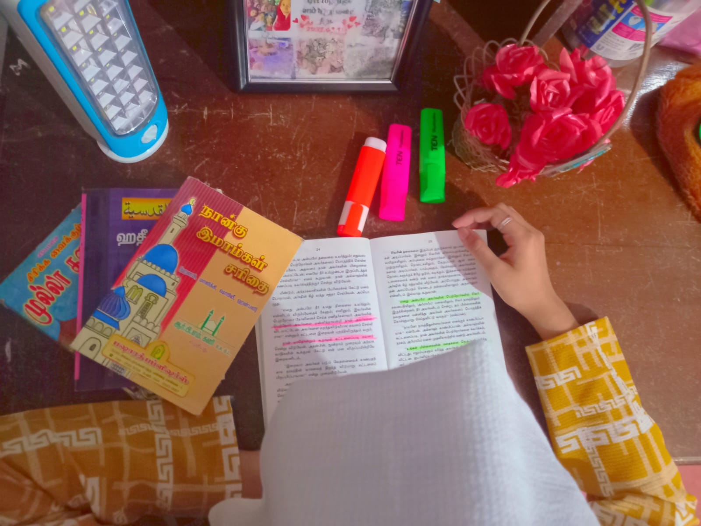

Photo editing is a fascinating hobby that allows me to express my creativity and enhance
the beauty of the images I capture. It is a skill that requires both technical knowledge and artistic vision.
With photo editing software, you can adjust the colors, brightness, contrast, sharpness, and many other parameters
of your photos to achieve your desired results.
One of the great things about photo editing
is that it's a versatile hobby. You can edit photos of landscapes, people, animals, or any other subject that interests you. You can also
experiment with different styles and techniques to create unique and stunning images that reflect your personality and style.

Another benefit of photo editing is that it can help you improve your photography skills. When you edit photos, you can see how small changes can make a big difference in the final
result. You can also learn how to use different editing tools and techniques to achieve specific effects.
Photo editing is a very fulfilling hobby because it allows me to create something that is uniquely my own.
You can take a simple photo and turn it into a work of art that you are proud to share with others. Whether you are editing photos for personal enjoyment or to
showcase your work on social media or other platforms, it is a hobby that can bring you joy and satisfaction.
In conclusion, photo editing is a fantastic hobby that offers many opportunities for creativity and self-expression. With the right tools, techniques, and inspiration, you can create
amazing images that capture the beauty of the world around you. I encourage you to keep exploring this fascinating hobby and see where it takes you!.